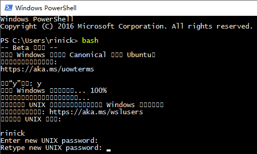

安装 Windows10 Linux子系统 ( Ubuntu )
通过以下步骤来安装Windows 10的Linux子系统。完成以后就会有一个兼容Ubuntu的Bash终端。
本页教程只适用于最新版的Win10。老版Windows或OSX系统请使用VirtualBox镜像
启用Linux子系统
在Windows设置里，进入更新和安全，开启开发人员模式

在 控制面板 - 程序和功能 里，开启Linux子系统

重启后，开启powershell终端，在终端里输入“bash”回车

第一次打开Bash会提示要不要下载安装Ubuntu，键入y回车就会开始下载
下载完成后需要几分钟时间解压，解压完以后按下回车会提示新建linux用户名，再输入两次密码
如果是中文系统的话这里可能会出现乱码，但不影响之后的使用

安装Neural Style服务
接着逐行复制以下命令到bash终端，整个过程需要下载1GB以上的数据
运行的过程中有几处会提示输入密码
cd ~
sudo apt-get update; sudo apt-get -y install build-essential git cmake libprotobuf-dev protobuf-compiler curl libreadline-dev
curl -s https://raw.githubusercontent.com/rinick/neural-style-server/master/install_torch.sh | bash
source ~/.bashrc
curl -s https://raw.githubusercontent.com/rinick/neural-style-server/master/install_server.sh | bash
熟悉Linux的用户也可以无视上面的步骤自行安装需要的模块
运行Neural Style服务
在bash终端输入
cd neural-style-server
sh run.sh